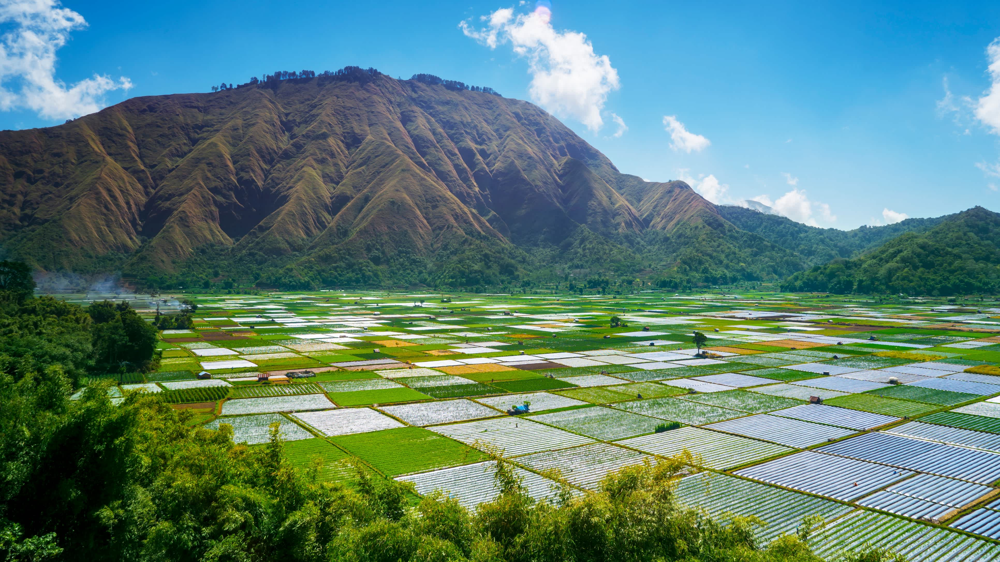

Lombok
Lombok, an enchanting island located east of Bali, offers a tranquil escape with its pristine beaches, majestic Rinjani volcano, and lush forests. Known for its relaxed atmosphere and less commercialized environment compared to Bali, Lombok is a paradise for those seeking peace and natural beauty. The island is also home to the indigenous Sasak culture, adding a unique cultural dimension to your visit.
How to Get There
Lombok International Airport connects the island with various domestic and international destinations. A roundtrip from Jakarta is around 2,5-3 million rubias and takes 2 hours.
Ferries and speedboats operate from Bali, offering scenic sea journeys. The ferryride is under 2 hours and costs around 400k rubias.
What to Do?
Explore the Gili Islands for snorkeling and diving, hike the trails of Mount Rinjani, and visit traditional Sasak villages (!!!). Relax on the stunning beaches of Kuta Lombok and enjoy the vibrant local markets and exquisite local cuisine.
Tips:
- Respect local customs and traditions, especially in rural and traditional areas.
- Rent a scooter or a car to explore the island at your own pace.
- Try local delicacies like Ayam Taliwang and Bebalung Soup.
- Stay hydrated and protect yourself from the sun.